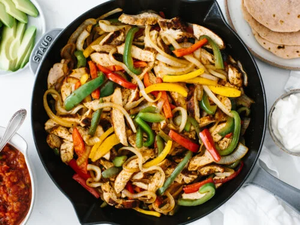

Chicken Fajitas

The EASIEST Chicken fajitas ever!
Need a simple, vibrant midweek meal the family will love? Put together these easy chicken fajitas and people can create their own masterpieces at the table
Ingredients
- 2 chicken breasts, finely sliced
- 1 red onion, finely sliced
- 1 red pepper, sliced
- 1 red chilli, finely sliced (optional)
- smoked paprika
- 1tbsp ground coriander
- ground cumin
- 2 garlic cloves, crushed
- 4tbsp olive oil
- 1 lime, juiced
- Tabasco
- 8 tortillas
- mixed salad
- 230g fresh salsa
Steps to make Fajitas
Here's a brief step by step of what to expect during this process:
- Heat oven to 200C/180C fan/gas 6 and wrap 8 medium tortillas in foil.
- Mix 1 heaped tbsp smoked paprika, 1 tbsp ground coriander, a pinch of ground cumin, 2 crushed garlic cloves, 4 tbsp olive oil, the juice of 1 lime and 4-5 drops Tabasco together in a bowl with a big pinch each of salt and pepper.
- Stir 2 finely sliced chicken breasts, 1 finely sliced red onion, 1 sliced red pepper and 1 finely sliced red chilli, if using, into the marinade.
- Heat a griddle pan until smoking hot and add the chicken and marinade to the pan.
- Keep everything moving over a high heat for about 5 mins using tongs until you get a nice charred effect. If your griddle pan is small you may need to do this in two batches.
- To check the chicken is cooked, find the thickest part and tear in half. If any part is still raw, cook until done.
- Put the tortillas in the oven to heat up and serve with the cooked chicken, a bag of mixed salad and one 230g tub of fresh salsa.